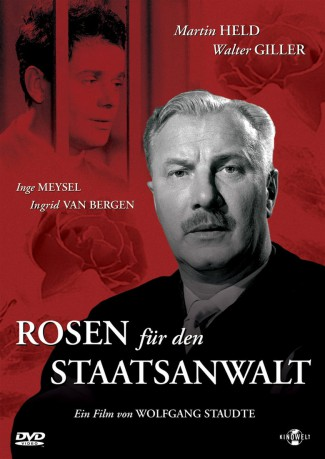

#10759 Rosen für den Staatsanwalt
 
 IMDB-Wertung: 7.4 / 10
IMDB-Wertung: 7.4 / 10  Metascore: 0
Metascore: 0 
Weil er während des Zweiten Weltkriegs zwei Dosen Fliegerschokolade auf dem Schwarzmarkt gekauft hat, wird der Soldat Kleinschmidt von einem Kriegsgericht unter der Anklage des Kriegsgerichtsrats Schramm zum Tode verurteilt. Durch einen Fliegerangriff entkommt Kleinschmidt der Exekution. Nun ist der Krieg vorbei, Kleinschmidt kehrt in seine Heimatstadt zurück. Dort trifft er durch Zufall seinen einstigen Ankläger Schramm wieder, der auch im "entnazifizierten" Deutschland Karriere als Oberstaatsanwalt gemacht hat. Schramm, der noch immer von seiner treudeutschen Gesinnung geleitet wird, fürchtet um die Aufdeckung seiner dunklen Vergangenheit und setzt alles daran, Kleinschmidt aus der Stadt zu vertreiben. Als der traumatisierte Kleinschmidt im Affekt ein Schaufenster einschlägt, um zwei Dosen Schokolade zu stehlen, kommt es zu einem neuerlichen Prozess, bei dem abermals Schramm die Anklage führt.
Jahr: 1959
Dauer: 98 Minuten
FSK: 12
Land: West-Deutschland Studio: Neue FilmverleihTonspuren:
Untertitel:
Auflösung: 1080p (1488x1080) Größe: 6717 MB
Genre: Drama, Komödie
Regisseur: Wolfgang Staudte
Drehbuch: George Hurdalek, Wolfgang Staudte
Soundtrack: Raimund Rosenberger
Darsteller:
 Walter Giller als Rudi Kleinschmidt
Walter Giller als Rudi Kleinschmidt Ingrid van Bergen als Lissy Flemming
Ingrid van Bergen als Lissy Flemming- Camilla Spira als Hildegard Schramm
 Werner Peters als Otto Kugler
Werner Peters als Otto Kugler- Paul Hartmann als Landgerichtspräsident Diefenbach
 Wolfgang Preiss als Generalstaatsanwalt
Wolfgang Preiss als Generalstaatsanwalt- Werner Finck als Haase
- Martin Held als Oberstaatsanwalt Dr. Wilhelm Schramm
- Wolfgang Wahl als Defense Counsel
- Inge Meysel als Erna, Hausmädchen bei Schramms
- Ralf Wolter als Hessel
- Roland Kaiser als Werner Schramm
- Henry Lorenzen als Graumann, Kellner bei Lissy
- Wolfgang Neuss als Paul, ein Lastwagenfahrer
- Wolfgang Müller als Karl, ein Lastwagenfahrer
- Dieter Neckritz als Reporter (uncredited)
- Burghard Ortgies als Manfred Schramm (uncredited)
Datei: X:\1950-1959\Rosen für den Staatsanwalt (1959, FSK12, 1488x1080).mkv seit 22.02.2019
Festplatte: Gemischt-01+Anime
 Es gibt insgesamt 141 Filme in der Gruppe '1950-1959'
Es gibt insgesamt 141 Filme in der Gruppe '1950-1959'